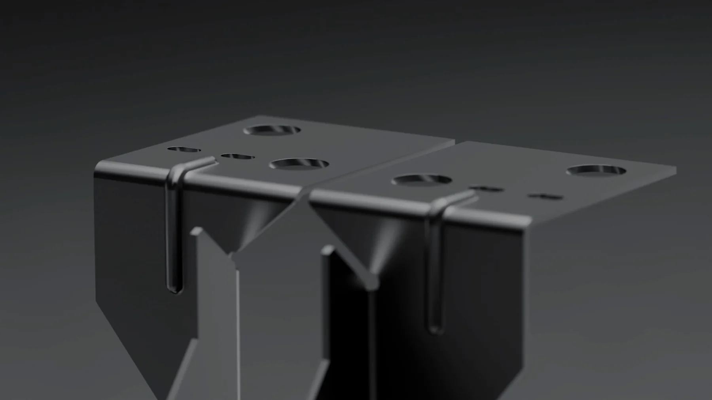

Add-on hard-surface Blender: nên cài những gì
Câu trả lời ngắn cho add-on hard-surface Blender: ba cái đáng cài là Hard Ops, Boxcutter và MESHMachine, và chỉ nên cài sau khi bạn đã dựng tay được vài món có cạnh bo tử tế. Trước mốc đó, add-on làm bạn ra hình nhanh hơn nhưng giấu đi đúng thứ bạn cần học.
Michał Kalisz, Environment và Prop Artist tại CD Projekt Red, từng chia sẻ trên 80 Level danh sách add-on anh dùng cho hard-surface. Danh sách đó tốt, nhưng nó viết cho người làm asset game. Nếu bạn đang học để dựng sản phẩm thương mại, nhu cầu khác đi khá nhiều: ít bake texture hơn, nhiều cạnh bo sạch và phản chiếu đúng hơn.
Bài này đi qua danh sách của anh ấy, kèm đánh giá thẳng về mức độ cần thiết cho công việc dựng sản phẩm và TVC, một bảng chọn theo giai đoạn, và danh sách kiểm tra trước khi bạn bỏ tiền.
Ba câu hỏi lọc trước khi cài bất kỳ add-on hard-surface nào
Phần lớn thời gian lãng phí quanh chủ đề này không nằm ở chọn sai add-on, mà ở cài đúng cái nhưng sai lúc. Ba câu hỏi dưới đây lọc được gần hết.
Một: bạn đã dựng tay được món nào có cạnh bo và lỗ khoan chưa? Nếu chưa, chưa phải lúc. Boolean tạo ra topology xấu, và nếu bạn chưa biết topology tốt trông thế nào thì bạn sẽ không thấy nó xấu, cho tới lúc bevel vỡ và không hiểu vì sao.
Hai: bạn làm asset game hay làm ảnh sản phẩm? Hai hướng này cần hai nhóm công cụ khác nhau. Nhóm UV và texel density chỉ đáng cài ở hướng thứ nhất. Hướng thứ hai dùng vật liệu procedural là chính, nên nửa danh sách trở thành thừa.
Ba: chỗ nghẽn hiện tại của bạn là thao tác hay là mắt nhìn? Nếu bạn biết phải làm gì mà làm chậm, add-on giúp thật. Nếu bạn nhìn render của mình thấy chưa ổn mà không chỉ ra được vì sao, không add-on nào chữa được, chỗ đó cần người xem file. Bài học modeling 3D từ đâu mô tả đúng chuỗi mốc này và chỉ ra chỗ phần lớn người học đứng lại.
Nhóm add-on hard-surface đáng cài sớm
Hard Ops và Boxcutter
Hai cái này thường đi cùng nhau. Boxcutter lo phần cắt boolean nhanh, Hard Ops là bộ trợ lý gom các thao tác lặp lại. Với đồ công nghiệp như vỏ máy, thiết bị, chi tiết kim loại, cặp này rút ngắn thời gian rõ rệt.
Nhưng: đừng cài khi chưa dựng được vỏ máy bằng tay. Chúng không dạy bạn vì sao một cạnh bo trông đắt tiền còn cạnh khác trông như nhựa rẻ. Chúng chỉ giúp bạn tới chỗ đó nhanh hơn, kể cả khi hướng đi đang sai.
MESHMachine
Chuyên xử lý phần khó nhất của hard-surface: chỗ giao nhau giữa các bề mặt sau khi boolean. Đây là add-on tôi cho là đáng tiền nhất trong danh sách, vì nó giải quyết đúng chỗ mà người mới hay bỏ cuộc. Khi ba mặt gặp nhau ở một góc và bevel bắt đầu chồng lên nhau, sửa tay mất rất nhiều thời gian.
Modifier List
Nhỏ nhưng dùng hàng ngày. Chồng modifier mặc định của Blender khó đọc khi dài; cái này làm nó gọn lại. Rẻ, không rủi ro, và không che giấu kiến thức nào cả.
Nhóm add-on tuỳ việc
Texel Density Checker và UVPackMaster
Cả hai đều xoay quanh UV. Nếu bạn làm asset game hoặc cần bake texture, chúng cần thiết. Nếu bạn render sản phẩm tĩnh với vật liệu procedural, và phần lớn job TVC sản phẩm rơi vào đây, thì bạn hiếm khi động tới.
GroupPro, Array Tools, QBlocker, Rebevel
Đều là tiện ích tiết kiệm thao tác. Hữu ích khi bạn đã làm nhanh và muốn nhanh hơn. Không nên là thứ bạn cài trong sáu tháng đầu, vì mỗi add-on thêm vào là một bộ phím tắt phải nhớ, và trí nhớ của bạn lúc đó nên dành cho thứ khác.
Bảng chọn add-on hard-surface theo giai đoạn
Bảng dưới đây không xếp hạng add-on theo chất lượng. Nó xếp theo thời điểm cài vào thì có lợi, vì đó mới là chỗ hay sai.
| Giai đoạn | Dấu hiệu nhận biết | Nên cài | Chưa nên cài | Việc quan trọng hơn add-on |
|---|---|---|---|---|
| Ba tháng đầu | Còn phải tra phím tắt khi bo cạnh | Không cài gì, hoặc chỉ Modifier List | Mọi thứ liên quan boolean | Dựng tay ba món có lỗ khoan và cạnh bo |
| Đã dựng tay được vài món | Hình đúng khối nhưng làm rất chậm | Hard Ops, Boxcutter | Nhóm UV | Tập blockout trước khi vào chi tiết |
| Bắt đầu nhận bài khó | Bevel vỡ ở chỗ ba mặt gặp nhau | MESHMachine | Nhóm tiện ích tăng tốc | Học đọc chất liệu từ ảnh tham chiếu |
| Làm asset có bake texture | Cần trải UV đều và xếp khít | Texel Density Checker, UVPackMaster | Không có | Quy ước đặt tên và tổ chức file |
| Làm nghề, tính theo giờ | Lặp lại một dạng chi tiết nhiều lần | GroupPro, Array Tools, Rebevel | Không có | Thư viện chi tiết dùng lại của riêng bạn |
Nếu bạn đang ở hai hàng đầu, kết luận thực tế là chưa nên mua gì. Thứ tự bài tập để qua được mốc đó nằm trong bài khoá học modeling 3D, dùng được cả khi bạn tự học.

Phần quan trọng hơn cả danh sách add-on
Kalisz nhấn mạnh nghiên cứu tham chiếu kỹ trước khi dựng, và làm blockout trước khi vào chi tiết. Về topology: giữ số vòng loop ở mức vừa đủ để kiểm soát, ưu tiên quad nhưng chấp nhận tam giác trên bề mặt phẳng, và bevel theo đúng chất liệu, vì kim loại gia công có cạnh khác với nhựa đúc khuôn.
Dòng cuối cùng đó là dòng đáng tiền nhất trong cả bài gốc. Một cạnh bo rộng ba milimet trên vỏ nhựa là bình thường, nhưng đặt lên tấm thép dập thì món đồ lập tức trông như đồ chơi. Không add-on nào biết bạn đang dựng vật liệu gì, chỉ ảnh tham chiếu mới nói được điều đó.
Không add-on nào thay được mấy điều trên. Một người nắm chắc blockout và bevel, dùng Blender trần, vẫn ra sản phẩm tốt hơn người cài đủ mười add-on mà bỏ qua tham chiếu. Nếu bạn đang nhắm hẳn vào mảng hàng tiêu dùng và thiết bị, bài khoá học dựng hình sản phẩm nói rõ bốn kỹ năng một lớp dạng này phải dạy và chỗ các lớp hay cắt bớt.
Góc nhìn ngược: đừng để kỹ thuật lấn hết
Ahmed Yahya, một 3D Environment và Prop Artist khác, đưa ra lập luận đáng cân nhắc: tập trung quá mức vào kỹ thuật làm gián đoạn quá trình sáng tạo, và định hướng nghệ thuật nên dẫn dắt kỹ thuật chứ không phải ngược lại. Quy trình của anh đi qua Plasticity để dựng, Blender để dọn dẹp, ZBrush để lên high-poly.
Tôi đồng ý với nguyên tắc, nhưng có một điều kiện: nó chỉ đúng khi bạn đã đủ kỹ thuật để nó không cản đường. Người mới nghe câu nghệ thuật quan trọng hơn kỹ thuật rất dễ dùng nó làm cớ để không học topology, rồi mắc kẹt ở đúng chỗ topology.
Kỹ thuật đủ tốt là kỹ thuật bạn không phải nghĩ tới. Trước khi tới được đó, bỏ qua kỹ thuật không phải là tự do, mà là trần thấp.
Danh sách kiểm tra trước khi bỏ tiền mua add-on
Chạy qua danh sách này trước mỗi lần định mua. Thiếu quá hai dòng thì nên hoãn lại một tháng và quay lại sau.
- Bạn chỉ ra được đúng thao tác mình đang mất thời gian, bằng câu cụ thể chứ không phải cảm giác làm chậm.
- Bạn đã thử làm thao tác đó bằng công cụ có sẵn của Blender ít nhất ba lần.
- Add-on còn được cập nhật cho phiên bản Blender bạn đang dùng trong vòng một năm gần đây.
- Có bản dùng thử hoặc có video dài ai đó làm việc thật với nó, không chỉ đoạn quảng cáo ba mươi giây.
- Bạn biết trước nó ảnh hưởng gì tới topology, và biết cách dọn sau khi dùng.
- File bạn tạo ra vẫn mở được bình thường trên máy không cài add-on đó.
- Bạn không mua nó để tránh phải học một thứ cơ bản mà mình đang né.
Dòng cuối là dòng hay bị vi phạm nhất. Mua một add-on để khỏi phải hiểu bevel cũng giống mua thêm giá sách để khỏi phải đọc. Dạng bằng chứng về việc học thật trông như trang bài tập học viên của chúng tôi, có cả bài tốt lẫn bài còn yếu kèm nhận xét.
Nếu chỉ được cài ba thứ
Với người học hard-surface để làm sản phẩm thương mại, tôi chọn: Hard Ops, Boxcutter, MESHMachine, và chỉ sau khi đã dựng tay được vài món tử tế. Số tiền còn lại để dành mua tham chiếu tốt hoặc một chặng có người sửa bài, giá trị cao hơn.
Một lưu ý về máy móc: nhóm add-on boolean làm chồng modifier dài ra, và cảnh nặng lên nhanh hơn bạn nghĩ khi chưa áp dụng modifier. Mức cấu hình đủ cho từng giai đoạn nằm trong bài cấu hình máy học Blender, đọc trước khi đổ tiền vào phần mềm thay vì phần cứng.
Muốn biết hard-surface nằm ở đâu trong lộ trình học, xem lộ trình tự học Blender. Nó là bước thứ năm, và có lý do nó không đứng sớm hơn.
Hỏi đáp nhanh
Người mới nên cài add-on hard-surface Blender từ lúc nào?
Sau khi bạn đã dựng tay xong ít nhất ba món có cạnh bo và lỗ khoan mà không dùng boolean. Mốc đó quan trọng vì add-on hard-surface chủ yếu rút ngắn thao tác, không dạy bạn nhận ra topology xấu. Cài sớm thì bạn vẫn ra hình nhanh, nhưng tới lúc bevel vỡ hoặc bóng trên bề mặt gợn sóng thì không biết bắt đầu sửa từ đâu.
Blender bản thường có đủ để làm hard-surface thương mại không?
Đủ cho phần lớn việc dựng sản phẩm tĩnh. Bevel, boolean, mirror, array và subdivision có sẵn trong Blender đã giải được hầu hết chi tiết của đồ gia dụng, thiết bị và bao bì. Add-on tiết kiệm thao tác chứ không mở ra hình dạng mới, nên thiếu chúng thì chậm hơn chứ không phải không làm được.
Chỉ được chọn ba add-on hard-surface thì chọn gì?
Hard Ops, Boxcutter và MESHMachine, theo thứ tự đó, và chỉ sau khi đã qua được mốc dựng tay. Hai cái đầu lo tốc độ cắt khối, cái thứ ba lo chỗ giao nhau giữa các bề mặt sau boolean, đúng chỗ người mới hay bỏ cuộc. Modifier List nên cài kèm vì nhẹ và gần như không có rủi ro.
Add-on hard-surface có làm file nặng hoặc khó mở trên máy khác không?
Bản thân add-on không đi theo file. Rủi ro nằm ở chỗ chúng khuyến khích để nguyên một chồng modifier và một loạt vật thể boolean chưa áp dụng, nên file mở trên máy khác dễ chậm hoặc khác đi nếu bên kia thiếu đúng phiên bản. Trước khi gửi file cho người khác, nên áp dụng modifier và gom lại cho gọn.
Có nên mua add-on trả phí ngay trong năm đầu học không?
Thường là chưa cần. Trong năm đầu, phần làm hình xấu hiếm khi là thiếu công cụ, mà là tham chiếu sơ sài và bevel đặt sai chất liệu. Số tiền đó dùng cho tham chiếu tốt hoặc một chặng có người chữa file sẽ đổi lại nhiều hơn. Khi đã nhận việc thật và thời gian là chi phí thật thì add-on trả phí mới hoàn vốn nhanh.
Tóm lại, chọn add-on hard-surface Blender là bài toán thời điểm nhiều hơn là bài toán danh sách. Ba cái đáng cài vẫn là Hard Ops, Boxcutter và MESHMachine, nhưng cài trước mốc dựng tay thì chúng che mất đúng thứ bạn cần nhìn thấy.
Nếu bạn muốn có người soi topology từng tuần thay vì tự đoán, hai hệ ở trang khoá học 3D Blender chữa bài theo đúng thứ tự trên, còn hình thức ngắn hơn theo chỗ kẹt thì xem bài học kèm 3D. Cần bộ checklist bevel và quy trình kết xuất để dùng khi làm việc thật thì tải cẩm nang Blender. Còn nếu bạn đang cần ảnh sản phẩm cho thương hiệu chứ không phải học dựng, xem dịch vụ render 3D sản phẩm của chúng tôi.
Nguồn tham khảo
Bài viết là phân tích và quan điểm riêng của LXAM Studio, dựa trên thông tin từ các nguồn dưới đây. Bấm vào để đọc bản gốc.
- Tools and Tips for Hard-Surface Modeling in Blender (80 Level, Michał Kalisz, CD Projekt Red)
- Ahmed Yahya Shared a Breakdown of Hard-Surface Modeling Process (80 Level)
Đọc tiếp


Muốn được sửa bài trực tiếp?
Coaching 1:1 online, đồng hành trọn một năm. Để lại thông tin, tôi xem qua và tư vấn bạn nên bắt đầu từ đâu.
Đăng ký tư vấn